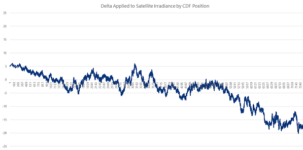
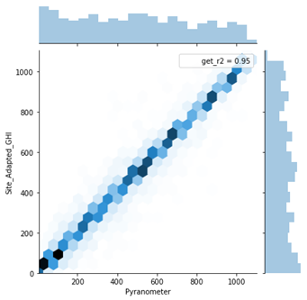
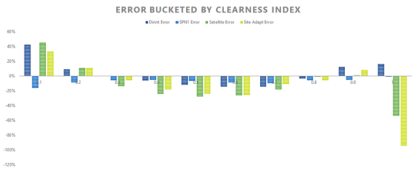

Kolmogorov Smirnoff Index Long Term Correlation
Correction of Long Term Satellite Resource Data Series to Measured Ground Data via KSI fit Methodology
Introduction
Due to inherent biases related to modeling solar resource by satellite and determining the components of irradiance via satellite models, it is sometimes necessary to attempt to correct the satellite resource dataset to better represent the true irradiance at a given project site. In this case, true is represented by high quality measured irradiance. The goal is to create a dataset with the long history of the satellite model, but the accuracy of the shorter term measured data.
There are multiple methods to correct for satellite bias, the standard method being linear fit. In this method, an analyst creates a linear regression of the satellite and measured datasets and applies the linear correction factor to the satellite dataset. This correction is then either used to initialize PVSysts/Meteonorm's markov chain synthetic generation process, or a separation model is applied to the correct global horizontal irradiance dataset. There are resulting artifacts of using either of these methods which result in poor fit to measured data. The markov chain method seriously degrades the accuracy of irradiance components by time of day and modeling the diffuse on linearly corrected global horizontal irradiance degrades the clearness index calculation.
Methods

Figure 1: Correction applied to Long Term Dataset
In an attempt to improve the performance of the long term correlation and account for non-linear artifacts of the satellite model, I attempted to use the Kolmogorov-Smirnoff Index instead of the linear correction factor. The program as written finds the concurrent period between the satellite global horizontal irradiance data series and the corresponding pyranometer (sensor) data series. The satellite data is then sorted into a cumulative distribution function and labeled by index. The same is done for the pyrnaometer data series. Next, the algorithm exands its scope to the full timeseries dataset and applies a correction by replacing values in the satellite data series from the pyranometer data series by index. Once this is completed one can apply a separation model to attain the desired irradiance components.
Results
Although the KSI method reduces the mean bias error as well as the root mean square error of the resulting global horizontal data series, the resulting irradiance components as attained by the separation model does not show a significant improvement over the original satellite dataset. It was found that using relative humidity and pressure data from the satellite file seriously degrades the performance of the separation model, calling into question the accuracy of those datasets. Using only the minimum inputs to the separation model gives an improved mean bias error of the diffuse component of irradiance, but slightly degrades the root mean square error. This may be due to the fact that the satellite datasource uses the DirIndex separation model, where we used the less sophisticated DirInt model due to lack of reliable inputs. Overall, this alternative methodology for long term correlations is without question an improvement on the linear fit method, but not a panacea for all of the questions that may arise when attempting to statistically correlate satellite datasets with sensor based ones.
| Images | |
|---|---|
 Figure 2: R2 of Resulting Data |
 Figure 3: Error of Diffuse Model by Clearness Index |